<?xml version="1.0" encoding="utf-8"?>
<!DOCTYPE html PUBLIC "-//W3C//DTD XHTML 1.0 Strict//EN"
"http://www.w3.org/TR/xhtml1/DTD/xhtml1-strict.dtd">
<html xmlns="http://www.w3.org/1999/xhtml" lang="en" xml:lang="en">
<head>
<!-- 2024-09-03 Tue 15:43 -->
<meta http-equiv="Content-Type" content="text/html;charset=utf-8" />
<meta name="viewport" content="width=device-width, initial-scale=1" />
<title>Javascript Notes - Async</title>
<meta name="author" content="mklno" />
<meta name="generator" content="Org Mode" />
<style type="text/css">
  #content { max-width: 60em; margin: auto; }
  .title  { text-align: center;
             margin-bottom: .2em; }
  .subtitle { text-align: center;
              font-size: medium;
              font-weight: bold;
              margin-top:0; }
  .todo   { font-family: monospace; color: red; }
  .done   { font-family: monospace; color: green; }
  .priority { font-family: monospace; color: orange; }
  .tag    { background-color: #eee; font-family: monospace;
            padding: 2px; font-size: 80%; font-weight: normal; }
  .timestamp { color: #bebebe; }
  .timestamp-kwd { color: #5f9ea0; }
  .org-right  { margin-left: auto; margin-right: 0px;  text-align: right; }
  .org-left   { margin-left: 0px;  margin-right: auto; text-align: left; }
  .org-center { margin-left: auto; margin-right: auto; text-align: center; }
  .underline { text-decoration: underline; }
  #postamble p, #preamble p { font-size: 90%; margin: .2em; }
  p.verse { margin-left: 3%; }
  pre {
    border: 1px solid #e6e6e6;
    border-radius: 3px;
    background-color: #f2f2f2;
    padding: 8pt;
    font-family: monospace;
    overflow: auto;
    margin: 1.2em;
  }
  pre.src {
    position: relative;
    overflow: auto;
  }
  pre.src:before {
    display: none;
    position: absolute;
    top: -8px;
    right: 12px;
    padding: 3px;
    color: #555;
    background-color: #f2f2f299;
  }
  pre.src:hover:before { display: inline; margin-top: 14px;}
  /* Languages per Org manual */
  pre.src-asymptote:before { content: 'Asymptote'; }
  pre.src-awk:before { content: 'Awk'; }
  pre.src-authinfo::before { content: 'Authinfo'; }
  pre.src-C:before { content: 'C'; }
  /* pre.src-C++ doesn't work in CSS */
  pre.src-clojure:before { content: 'Clojure'; }
  pre.src-css:before { content: 'CSS'; }
  pre.src-D:before { content: 'D'; }
  pre.src-ditaa:before { content: 'ditaa'; }
  pre.src-dot:before { content: 'Graphviz'; }
  pre.src-calc:before { content: 'Emacs Calc'; }
  pre.src-emacs-lisp:before { content: 'Emacs Lisp'; }
  pre.src-fortran:before { content: 'Fortran'; }
  pre.src-gnuplot:before { content: 'gnuplot'; }
  pre.src-haskell:before { content: 'Haskell'; }
  pre.src-hledger:before { content: 'hledger'; }
  pre.src-java:before { content: 'Java'; }
  pre.src-js:before { content: 'Javascript'; }
  pre.src-latex:before { content: 'LaTeX'; }
  pre.src-ledger:before { content: 'Ledger'; }
  pre.src-lisp:before { content: 'Lisp'; }
  pre.src-lilypond:before { content: 'Lilypond'; }
  pre.src-lua:before { content: 'Lua'; }
  pre.src-matlab:before { content: 'MATLAB'; }
  pre.src-mscgen:before { content: 'Mscgen'; }
  pre.src-ocaml:before { content: 'Objective Caml'; }
  pre.src-octave:before { content: 'Octave'; }
  pre.src-org:before { content: 'Org mode'; }
  pre.src-oz:before { content: 'OZ'; }
  pre.src-plantuml:before { content: 'Plantuml'; }
  pre.src-processing:before { content: 'Processing.js'; }
  pre.src-python:before { content: 'Python'; }
  pre.src-R:before { content: 'R'; }
  pre.src-ruby:before { content: 'Ruby'; }
  pre.src-sass:before { content: 'Sass'; }
  pre.src-scheme:before { content: 'Scheme'; }
  pre.src-screen:before { content: 'Gnu Screen'; }
  pre.src-sed:before { content: 'Sed'; }
  pre.src-sh:before { content: 'shell'; }
  pre.src-sql:before { content: 'SQL'; }
  pre.src-sqlite:before { content: 'SQLite'; }
  /* additional languages in org.el's org-babel-load-languages alist */
  pre.src-forth:before { content: 'Forth'; }
  pre.src-io:before { content: 'IO'; }
  pre.src-J:before { content: 'J'; }
  pre.src-makefile:before { content: 'Makefile'; }
  pre.src-maxima:before { content: 'Maxima'; }
  pre.src-perl:before { content: 'Perl'; }
  pre.src-picolisp:before { content: 'Pico Lisp'; }
  pre.src-scala:before { content: 'Scala'; }
  pre.src-shell:before { content: 'Shell Script'; }
  pre.src-ebnf2ps:before { content: 'ebfn2ps'; }
  /* additional language identifiers per "defun org-babel-execute"
       in ob-*.el */
  pre.src-cpp:before  { content: 'C++'; }
  pre.src-abc:before  { content: 'ABC'; }
  pre.src-coq:before  { content: 'Coq'; }
  pre.src-groovy:before  { content: 'Groovy'; }
  /* additional language identifiers from org-babel-shell-names in
     ob-shell.el: ob-shell is the only babel language using a lambda to put
     the execution function name together. */
  pre.src-bash:before  { content: 'bash'; }
  pre.src-csh:before  { content: 'csh'; }
  pre.src-ash:before  { content: 'ash'; }
  pre.src-dash:before  { content: 'dash'; }
  pre.src-ksh:before  { content: 'ksh'; }
  pre.src-mksh:before  { content: 'mksh'; }
  pre.src-posh:before  { content: 'posh'; }
  /* Additional Emacs modes also supported by the LaTeX listings package */
  pre.src-ada:before { content: 'Ada'; }
  pre.src-asm:before { content: 'Assembler'; }
  pre.src-caml:before { content: 'Caml'; }
  pre.src-delphi:before { content: 'Delphi'; }
  pre.src-html:before { content: 'HTML'; }
  pre.src-idl:before { content: 'IDL'; }
  pre.src-mercury:before { content: 'Mercury'; }
  pre.src-metapost:before { content: 'MetaPost'; }
  pre.src-modula-2:before { content: 'Modula-2'; }
  pre.src-pascal:before { content: 'Pascal'; }
  pre.src-ps:before { content: 'PostScript'; }
  pre.src-prolog:before { content: 'Prolog'; }
  pre.src-simula:before { content: 'Simula'; }
  pre.src-tcl:before { content: 'tcl'; }
  pre.src-tex:before { content: 'TeX'; }
  pre.src-plain-tex:before { content: 'Plain TeX'; }
  pre.src-verilog:before { content: 'Verilog'; }
  pre.src-vhdl:before { content: 'VHDL'; }
  pre.src-xml:before { content: 'XML'; }
  pre.src-nxml:before { content: 'XML'; }
  /* add a generic configuration mode; LaTeX export needs an additional
     (add-to-list 'org-latex-listings-langs '(conf " ")) in .emacs */
  pre.src-conf:before { content: 'Configuration File'; }

  table { border-collapse:collapse; }
  caption.t-above { caption-side: top; }
  caption.t-bottom { caption-side: bottom; }
  td, th { vertical-align:top;  }
  th.org-right  { text-align: center;  }
  th.org-left   { text-align: center;   }
  th.org-center { text-align: center; }
  td.org-right  { text-align: right;  }
  td.org-left   { text-align: left;   }
  td.org-center { text-align: center; }
  dt { font-weight: bold; }
  .footpara { display: inline; }
  .footdef  { margin-bottom: 1em; }
  .figure { padding: 1em; }
  .figure p { text-align: center; }
  .equation-container {
    display: table;
    text-align: center;
    width: 100%;
  }
  .equation {
    vertical-align: middle;
  }
  .equation-label {
    display: table-cell;
    text-align: right;
    vertical-align: middle;
  }
  .inlinetask {
    padding: 10px;
    border: 2px solid gray;
    margin: 10px;
    background: #ffffcc;
  }
  #org-div-home-and-up
   { text-align: right; font-size: 70%; white-space: nowrap; }
  textarea { overflow-x: auto; }
  .linenr { font-size: smaller }
  .code-highlighted { background-color: #ffff00; }
  .org-info-js_info-navigation { border-style: none; }
  #org-info-js_console-label
    { font-size: 10px; font-weight: bold; white-space: nowrap; }
  .org-info-js_search-highlight
    { background-color: #ffff00; color: #000000; font-weight: bold; }
  .org-svg { }
</style>
<link rel="stylesheet" type="text/css" href="https://gongzhitaao.org/orgcss/org.css"/>
<link rel="stylesheet" type="text/css" href="style.css"/>
</head>
<body>
<div id="content" class="content">
<h1 class="title">Javascript Notes - Async</h1>
<div id="table-of-contents" role="doc-toc">
<h2>Table of Contents</h2>
<div id="text-table-of-contents" role="doc-toc">
<ul>
<li><a href="#org9ff3e91">1. Asynchronous Javascript, AJAX and APIs</a>
<ul>
<li><a href="#org501d131">1.1. Synchronous Code</a></li>
<li><a href="#org2912974">1.2. Asynchronous Code</a></li>
<li><a href="#org4469644">1.3. What are AJAX Calls?</a></li>
<li><a href="#orgbce56ee">1.4. What is an API?</a></li>
</ul>
</li>
<li><a href="#orged3754b">2. Our first AJAX Call</a></li>
<li><a href="#org8d99b94">3. Callback Hell</a></li>
<li><a href="#org388f1e1">4. Promises and Fetch API</a>
<ul>
<li><a href="#org1d76c15">4.1. What is a Promise and what can we do with it?</a></li>
<li><a href="#orge20a776">4.2. Lifecycle of a Promise</a></li>
</ul>
</li>
<li><a href="#orgd83342e">5. Consuming Promises</a></li>
<li><a href="#org38a6a70">6. Chaining Promises</a></li>
<li><a href="#org6a44b60">7. Handling Rejected Promises</a></li>
<li><a href="#org59e4fa9">8. Throwing errors manually</a></li>
<li><a href="#orgeeaa644">9. Asynchronous behing the scenes: Event loop</a>
<ul>
<li><a href="#orga0010e3">9.1. Work of an Eventloop</a></li>
</ul>
</li>
<li><a href="#org75835a0">10. Event Loop in practise</a></li>
<li><a href="#org9923aff">11. Building a Simple Promise</a></li>
<li><a href="#org5aa28ef">12. Promisiying the Geolocation API</a></li>
<li><a href="#org301c58a">13. Writing a Promise for an image</a></li>
<li><a href="#org2474350">14. Consuming Promises will Async/Await</a></li>
<li><a href="#org34c679d">15. Error handling with try&#x2026;catch</a></li>
<li><a href="#orgeeb8705">16. Returning values from Async functions</a></li>
</ul>
</div>
</div>
<div id="outline-container-org9ff3e91" class="outline-2">
<h2 id="org9ff3e91"><span class="section-number-2">1.</span> Asynchronous Javascript, AJAX and APIs</h2>
<div class="outline-text-2" id="text-1">
</div>
<div id="outline-container-org501d131" class="outline-3">
<h3 id="org501d131"><span class="section-number-3">1.1.</span> Synchronous Code</h3>
<div class="outline-text-3" id="text-1-1">

<div id="orgb21a1a8" class="figure">
<p>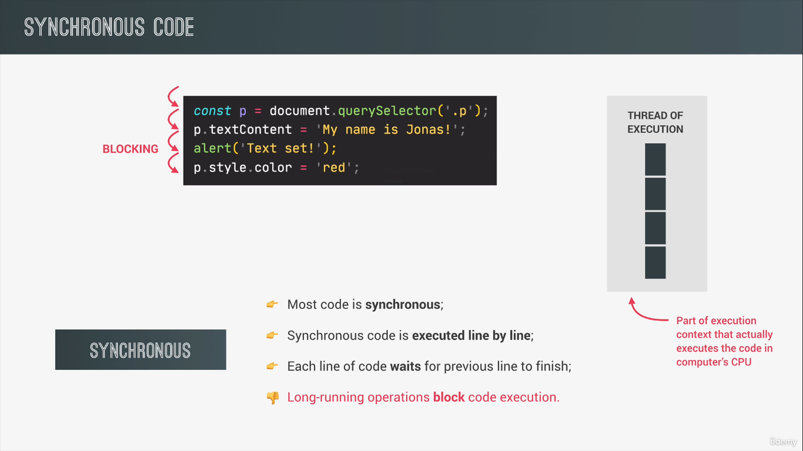
</p>
</div>
</div>
</div>
<div id="outline-container-org2912974" class="outline-3">
<h3 id="org2912974"><span class="section-number-3">1.2.</span> Asynchronous Code</h3>
<div class="outline-text-3" id="text-1-2">

<div id="orgf05f289" class="figure">
<p>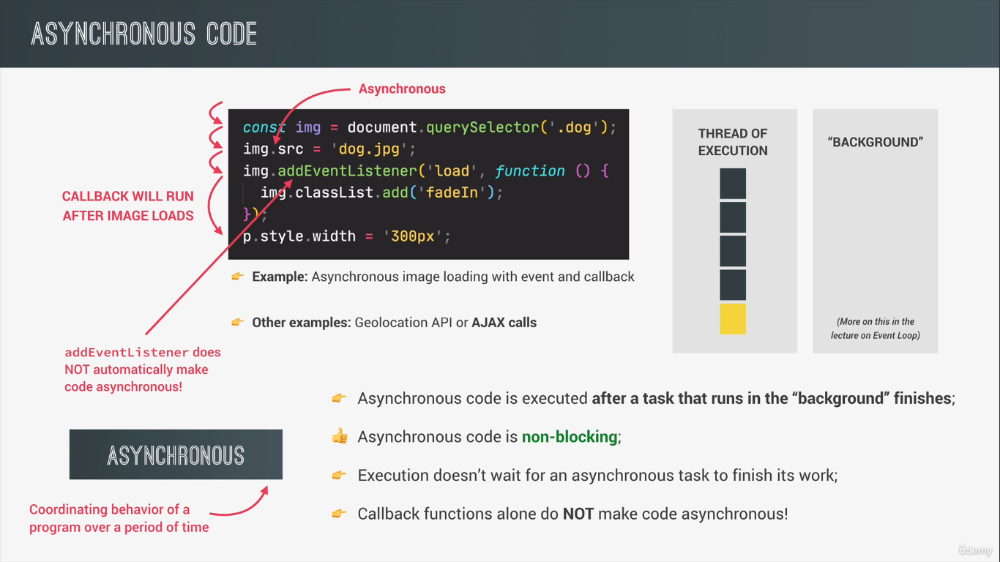
</p>
</div>
</div>
</div>
<div id="outline-container-org4469644" class="outline-3">
<h3 id="org4469644"><span class="section-number-3">1.3.</span> What are AJAX Calls?</h3>
<div class="outline-text-3" id="text-1-3">

<div id="orgac4d6b2" class="figure">
<p>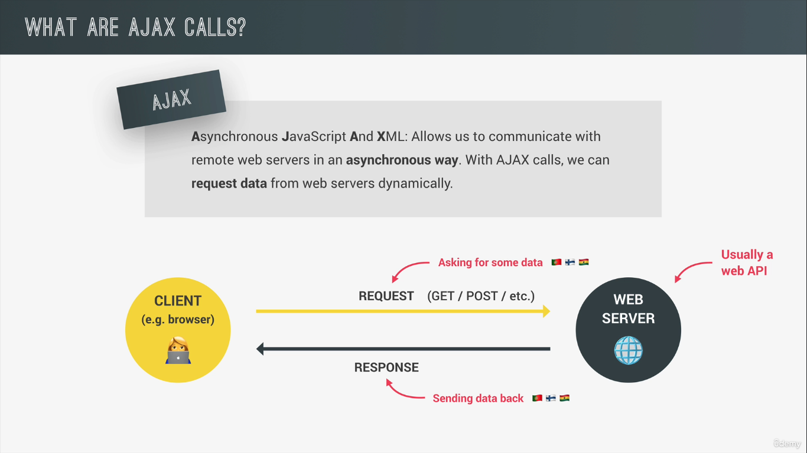
</p>
</div>
</div>
</div>
<div id="outline-container-orgbce56ee" class="outline-3">
<h3 id="orgbce56ee"><span class="section-number-3">1.4.</span> What is an API?</h3>
<div class="outline-text-3" id="text-1-4">
<p>
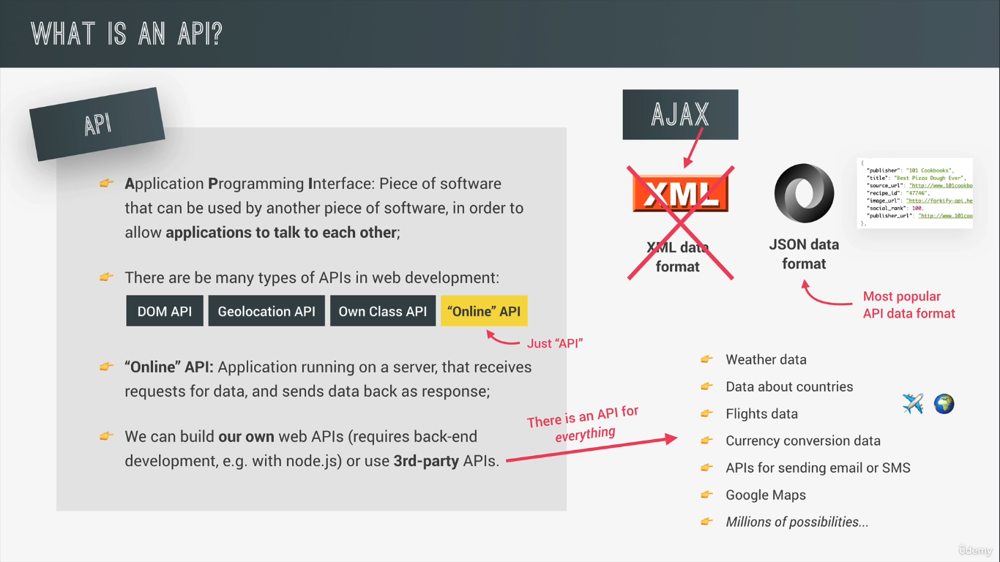
</p>
</div>
</div>
</div>
<div id="outline-container-orged3754b" class="outline-2">
<h2 id="orged3754b"><span class="section-number-2">2.</span> Our first AJAX Call</h2>
<div class="outline-text-2" id="text-2">

<div id="orge2fa153" class="figure">
<p>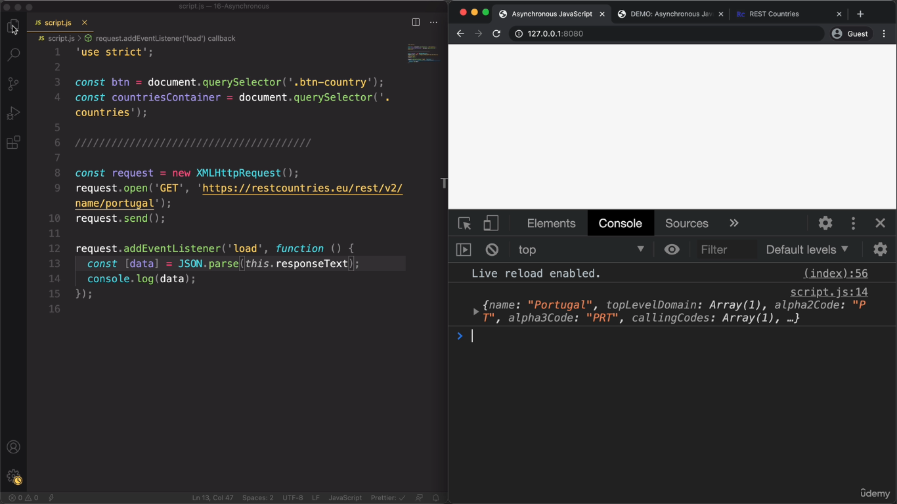
</p>
</div>
<div class="org-src-container">
<pre class="src src-js"><span style="color: #e5e5e5; font-weight: bold;">const</span> <span style="color: #e5e5e5;">request</span> = <span style="color: #e5e5e5; font-weight: bold;">new</span> <span style="color: #e5e5e5; font-style: italic;">XMLHttpRequest</span>();
request.open(<span style="color: #4682b4;">'GET'</span>, <span style="color: #4682b4;">'https://restcountries.com/v3.1/name/india'</span>);
request.send();

request.addEventListener(<span style="color: #4682b4;">'load'</span>, <span style="color: #e5e5e5; font-weight: bold;">function</span> () {
  <span style="color: #e5e5e5; font-weight: bold;">const</span> [<span style="color: #e5e5e5;">data</span>] = JSON.parse(<span style="color: #e5e5e5; font-weight: bold;">this</span>.responseText);
  console.log(data);
});
</pre>
</div>
<div class="org-src-container">
<pre class="src src-js"><span style="color: #e5e5e5; font-weight: bold;">const</span> <span style="color: #e5e5e5;">request</span> = <span style="color: #e5e5e5; font-weight: bold;">new</span> <span style="color: #e5e5e5; font-style: italic;">XMLHttpRequest</span>();
request.open(<span style="color: #4682b4;">'GET'</span>, <span style="color: #4682b4;">'https://restcountries.com/v3.1/name/portugal'</span>);
request.send();

request.addEventListener(<span style="color: #4682b4;">'load'</span>, <span style="color: #e5e5e5; font-weight: bold;">function</span> () {
  <span style="color: #e5e5e5; font-weight: bold;">const</span> [<span style="color: #e5e5e5;">data</span>] = JSON.parse(<span style="color: #e5e5e5; font-weight: bold;">this</span>.responseText);
  console.log(data);
  <span style="color: #e5e5e5; font-weight: bold;">const</span> <span style="color: #e5e5e5;">html</span> = <span style="color: #4682b4;">`        &lt;article class="country"&gt;</span>
<span style="color: #4682b4;">          &lt;img class="country__img" src="${data.flags.png}" /&gt;</span>
<span style="color: #4682b4;">          &lt;div class="country__data"&gt;</span>
<span style="color: #4682b4;">            &lt;h3 class="country__name"&gt;${data.name.common}&lt;/h3&gt;</span>
<span style="color: #4682b4;">            &lt;h4 class="country__region"&gt;${data.subregion}&lt;/h4&gt;</span>
<span style="color: #4682b4;">            &lt;p class="country__row"&gt;&lt;span&gt;&#128107;&lt;/span&gt;${(</span>
<span style="color: #4682b4;">              Number(data.population) / 1000000</span>
<span style="color: #4682b4;">            ).toFixed(1)} million&lt;/p&gt;</span>
<span style="color: #4682b4;">            &lt;p class="country__row"&gt;&lt;span&gt;&#128483;&#65039;&lt;/span&gt;${</span>
<span style="color: #4682b4;">              data.languages[Object.keys(data.languages)[0]]</span>
<span style="color: #4682b4;">            }&lt;/p&gt;</span>
<span style="color: #4682b4;">            &lt;p class="country__row"&gt;&lt;span&gt;&#128176;&lt;/span&gt;${</span>
<span style="color: #4682b4;">              data.currencies[Object.keys(data.currencies)[0]].name</span>
<span style="color: #4682b4;">            }&lt;/p&gt;</span>
<span style="color: #4682b4;">          &lt;/div&gt;</span>
<span style="color: #4682b4;">        &lt;/article&gt;`</span>;
  countriesContainer.insertAdjacentHTML(<span style="color: #4682b4;">'beforeend'</span>, html);
  countriesContainer.style.opacity = 1;
});
</pre>
</div>
</div>
</div>
<div id="outline-container-org8d99b94" class="outline-2">
<h2 id="org8d99b94"><span class="section-number-2">3.</span> Callback Hell</h2>
<div class="outline-text-2" id="text-3">
<ul class="org-ul">
<li>The output of the neighbouring countries depends on the callback of the country which is passed. So, we have nested callbacks.</li>
<li>When we have a callback inside a callback and inside which there is a callback its called callback hell.</li>
</ul>
<div class="org-src-container">
<pre class="src src-js"><span style="color: #e5e5e5; font-weight: bold;">const</span> <span style="color: #e5e5e5;">renderCountry</span> = <span style="color: #e5e5e5; font-weight: bold;">function</span> (<span style="color: #e5e5e5;">data</span>, <span style="color: #e5e5e5;">className</span> = <span style="color: #4682b4;">''</span>) {
  <span style="color: #e5e5e5; font-weight: bold;">const</span> <span style="color: #e5e5e5;">html</span> = <span style="color: #4682b4;">`        &lt;article class="country ${className}"&gt;</span>
<span style="color: #4682b4;">            &lt;img class="country__img" src="${data.flags.png}" /&gt;</span>
<span style="color: #4682b4;">            &lt;div class="country__data"&gt;</span>
<span style="color: #4682b4;">              &lt;h3 class="country__name"&gt;${data.name.common}&lt;/h3&gt;</span>
<span style="color: #4682b4;">              &lt;h4 class="country__region"&gt;${data.subregion}&lt;/h4&gt;</span>
<span style="color: #4682b4;">              &lt;p class="country__row"&gt;&lt;span&gt;&#128107;&lt;/span&gt;${(</span>
<span style="color: #4682b4;">                Number(data.population) / 1000000</span>
<span style="color: #4682b4;">              ).toFixed(1)} million&lt;/p&gt;</span>
<span style="color: #4682b4;">              &lt;p class="country__row"&gt;&lt;span&gt;&#128483;&#65039;&lt;/span&gt;${</span>
<span style="color: #4682b4;">                data.languages[Object.keys(data.languages)[0]]</span>
<span style="color: #4682b4;">              }&lt;/p&gt;</span>
<span style="color: #4682b4;">              &lt;p class="country__row"&gt;&lt;span&gt;&#128176;&lt;/span&gt;${</span>
<span style="color: #4682b4;">                data.currencies[Object.keys(data.currencies)[0]].name</span>
<span style="color: #4682b4;">              }&lt;/p&gt;</span>
<span style="color: #4682b4;">            &lt;/div&gt;</span>
<span style="color: #4682b4;">          &lt;/article&gt;`</span>;
  countriesContainer.insertAdjacentHTML(<span style="color: #4682b4;">'beforeend'</span>, html);
  countriesContainer.style.opacity = 1;
};
<span style="color: #e5e5e5; font-weight: bold;">const</span> <span style="color: #e5e5e5;">getCountryAndNeighbour</span> = <span style="color: #e5e5e5; font-weight: bold;">function</span> (<span style="color: #e5e5e5;">country</span>) {
  <span style="color: #e5e5e5; font-weight: bold;">const</span> <span style="color: #e5e5e5;">request</span> = <span style="color: #e5e5e5; font-weight: bold;">new</span> <span style="color: #e5e5e5; font-style: italic;">XMLHttpRequest</span>();
  request.open(<span style="color: #4682b4;">'GET'</span>, <span style="color: #4682b4;">`https://restcountries.com/v3.1/name/${country}`</span>);
  request.send();

  request.addEventListener(<span style="color: #4682b4;">'load'</span>, <span style="color: #e5e5e5; font-weight: bold;">function</span> () {
    <span style="color: #e5e5e5; font-weight: bold;">const</span> [<span style="color: #e5e5e5;">data</span>] = JSON.parse(<span style="color: #e5e5e5; font-weight: bold;">this</span>.responseText);
    renderCountry(data);

    <span style="color: #616161;">// </span><span style="color: #616161;">get neighbour country</span>
    <span style="color: #e5e5e5; font-weight: bold;">const</span> <span style="color: #e5e5e5;">neighbour</span> = data.borders?.[0];
    <span style="color: #e5e5e5; font-weight: bold;">const</span> <span style="color: #e5e5e5;">request2</span> = <span style="color: #e5e5e5; font-weight: bold;">new</span> <span style="color: #e5e5e5; font-style: italic;">XMLHttpRequest</span>();

    request2.open(<span style="color: #4682b4;">'GET'</span>, <span style="color: #4682b4;">`https://restcountries.com/v3.1/alpha/${neighbour}`</span>);
    request2.send();
    request2.addEventListener(<span style="color: #4682b4;">'load'</span>, <span style="color: #e5e5e5; font-weight: bold;">function</span> () {
      <span style="color: #e5e5e5; font-weight: bold;">const</span> [<span style="color: #e5e5e5;">data</span>] = JSON.parse(<span style="color: #e5e5e5; font-weight: bold;">this</span>.responseText);
      renderCountry(data, <span style="color: #4682b4;">'neighbour'</span>);
    });
  });
};

getCountryAndNeighbour(<span style="color: #4682b4;">'usa'</span>);
</pre>
</div>
</div>
</div>
<div id="outline-container-org388f1e1" class="outline-2">
<h2 id="org388f1e1"><span class="section-number-2">4.</span> Promises and Fetch API</h2>
<div class="outline-text-2" id="text-4">
<div class="org-src-container">
<pre class="src src-js"><span style="color: #616161;">// </span><span style="color: #616161;">the earlier XMLHTTP request can be made with a simple fetch call</span>
<span style="color: #e5e5e5; font-weight: bold;">const</span> <span style="color: #e5e5e5;">request</span> = fetch(<span style="color: #4682b4;">'https://restcountries.com/v3.1/name/india'</span>);
console.log(request); <span style="color: #616161;">// </span><span style="color: #616161;">returns a promise</span>
</pre>
</div>
</div>
<div id="outline-container-org1d76c15" class="outline-3">
<h3 id="org1d76c15"><span class="section-number-3">4.1.</span> What is a Promise and what can we do with it?</h3>
<div class="outline-text-3" id="text-4-1">

<div id="orgbd0bf57" class="figure">
<p>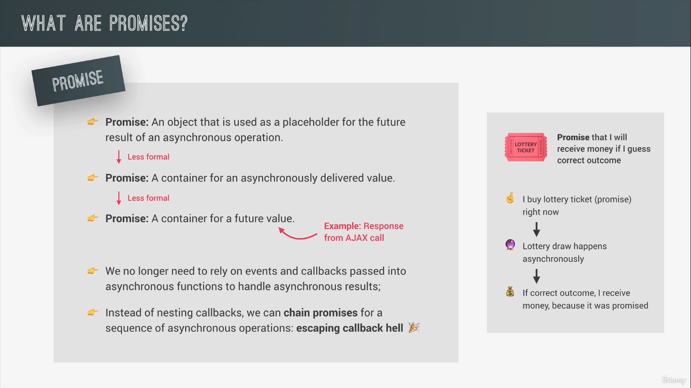
</p>
</div>
</div>
</div>
<div id="outline-container-orge20a776" class="outline-3">
<h3 id="orge20a776"><span class="section-number-3">4.2.</span> Lifecycle of a Promise</h3>
<div class="outline-text-3" id="text-4-2">
<ul class="org-ul">
<li>Since they work in an asynchronous environments, they are time sensitive. They change over time and so Promises can be in different states.</li>
</ul>

<div id="org8f48dbf" class="figure">
<p>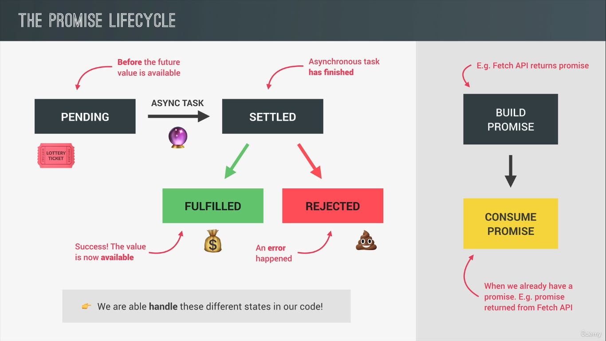
</p>
</div>
</div>
</div>
</div>
<div id="outline-container-orgd83342e" class="outline-2">
<h2 id="orgd83342e"><span class="section-number-2">5.</span> Consuming Promises</h2>
<div class="outline-text-2" id="text-5">
<div class="org-src-container">
<pre class="src src-js"><span style="color: #e5e5e5; font-weight: bold;">const</span> <span style="color: #e5e5e5;">getCountryData</span> = <span style="color: #e5e5e5; font-weight: bold;">function</span> (<span style="color: #e5e5e5;">country</span>) {
  <span style="color: #e5e5e5; font-weight: bold;">const</span> <span style="color: #e5e5e5;">request</span> = fetch(<span style="color: #4682b4;">`https://restcountries.com/v3.1/name/${country}`</span>).then(
    <span style="color: #e5e5e5; font-weight: bold;">function</span> (<span style="color: #e5e5e5;">response</span>) {
      console.log(response);
    }
  );
};

getCountryData(<span style="color: #4682b4;">'india'</span>);
</pre>
</div>

<div id="orga89c20d" class="figure">
<p>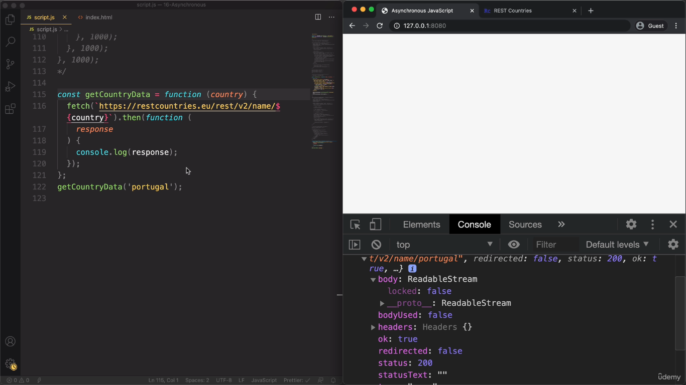
</p>
</div>
<ul class="org-ul">
<li>To read the data from the response, which is stored under the body variable in the response object (readable stream). We need to use json method which is available on all the responses of the fetch method.</li>
<li>The json method returns a promise and hence it need to handled as well.</li>
</ul>
<div class="org-src-container">
<pre class="src src-js"><span style="color: #e5e5e5; font-weight: bold;">const</span> <span style="color: #e5e5e5;">getCountryData</span> = <span style="color: #e5e5e5; font-weight: bold;">function</span> (<span style="color: #e5e5e5;">country</span>) {
  <span style="color: #e5e5e5; font-weight: bold;">const</span> <span style="color: #e5e5e5;">request</span> = fetch(<span style="color: #4682b4;">`https://restcountries.com/v3.1/name/${country}`</span>)
    .then(<span style="color: #e5e5e5; font-weight: bold;">function</span> (<span style="color: #e5e5e5;">response</span>) { <span style="color: #616161;">// </span><span style="color: #616161;">consuming the promise</span>
      <span style="color: #e5e5e5; font-weight: bold;">return</span> response.json();
    })
    .then(<span style="color: #e5e5e5; font-weight: bold;">function</span> (<span style="color: #e5e5e5;">data</span>) { <span style="color: #616161;">// </span><span style="color: #616161;">since return is also a promise its being consumed</span>
        renderCountry(data[0]);
    });
};

getCountryData(<span style="color: #4682b4;">'portugal'</span>);
</pre>
</div>
<ul class="org-ul">
<li>Much more readble than XMLHTTP request</li>
</ul>
<div class="org-src-container">
<pre class="src src-js"><span style="color: #e5e5e5; font-weight: bold;">const</span> <span style="color: #e5e5e5;">getCountryData</span> = <span style="color: #e5e5e5; font-weight: bold;">function</span> (<span style="color: #e5e5e5;">country</span>) {
  <span style="color: #e5e5e5; font-weight: bold;">const</span> <span style="color: #e5e5e5;">request</span> = fetch(<span style="color: #4682b4;">`https://restcountries.com/v3.1/name/${country}`</span>)
    .then(response =&gt; response.json())
    .then(data =&gt; renderCountry(data[0]));
};

getCountryData(<span style="color: #4682b4;">'portugal'</span>);
</pre>
</div>
</div>
</div>
<div id="outline-container-org38a6a70" class="outline-2">
<h2 id="org38a6a70"><span class="section-number-2">6.</span> Chaining Promises</h2>
<div class="outline-text-2" id="text-6">
<div class="org-src-container">
<pre class="src src-js"><span style="color: #e5e5e5; font-weight: bold;">const</span> <span style="color: #e5e5e5;">getCountryData</span> = <span style="color: #e5e5e5; font-weight: bold;">function</span> (<span style="color: #e5e5e5;">country</span>) {
  <span style="color: #e5e5e5; font-weight: bold;">const</span> <span style="color: #e5e5e5;">request</span> = fetch(<span style="color: #4682b4;">`https://restcountries.com/v3.1/name/${country}`</span>)
    .then(response =&gt; response.json())
    .then(data =&gt; {
      renderCountry(data[0]);

      <span style="color: #e5e5e5; font-weight: bold;">const</span> <span style="color: #e5e5e5;">neighbour</span> = data[0].borders?.[0];
      <span style="color: #e5e5e5; font-weight: bold;">return</span> fetch(<span style="color: #4682b4;">`https://restcountries.com/v3.1/alpha/${neighbour}`</span>);
    })
    .then(response =&gt; response.json())
    .then(data =&gt; renderCountry(data[0], <span style="color: #4682b4;">'neighbour'</span>));
};

getCountryData(<span style="color: #4682b4;">'portugal'</span>);
</pre>
</div>
<ul class="org-ul">
<li>The following code works but its back to the callback hell which is what we are trying to avoid in the first place by using promises.</li>
</ul>
<div class="org-src-container">
<pre class="src src-js"><span style="color: #e5e5e5; font-weight: bold;">const</span> <span style="color: #e5e5e5;">getCountryData</span> = <span style="color: #e5e5e5; font-weight: bold;">function</span> (<span style="color: #e5e5e5;">country</span>) {
  <span style="color: #e5e5e5; font-weight: bold;">const</span> <span style="color: #e5e5e5;">request</span> = fetch(<span style="color: #4682b4;">`https://restcountries.com/v3.1/name/${country}`</span>)
    .then(response =&gt; response.json())
    .then(data =&gt; {
      renderCountry(data[0]);

      <span style="color: #e5e5e5; font-weight: bold;">const</span> <span style="color: #e5e5e5;">neighbour</span> = data[0].borders?.[0];
      fetch(<span style="color: #4682b4;">`https://restcountries.com/v3.1/alpha/${neighbour}`</span>)
        .then(response =&gt; response.json())
        .then(data =&gt; renderCountry(data[0], <span style="color: #4682b4;">'neighbour'</span>));
    });
};
</pre>
</div>
<ul class="org-ul">
<li>Why the Original is Wrong: The original function breaks the promise chain by not returning the inner fetch call. As a result, errors in fetching the neighbor data won't be caught by any error handlers attached to the outer chain, and you lose the ability to manage all async operations together.</li>
<li>Why the Revised is Correct: The revised function returns the inner fetch call, maintaining a continuous promise chain. This makes the entire sequence of operations cohesive, properly handled, and debuggable.</li>
</ul>
</div>
</div>
<div id="outline-container-org6a44b60" class="outline-2">
<h2 id="org6a44b60"><span class="section-number-2">7.</span> Handling Rejected Promises</h2>
<div class="outline-text-2" id="text-7">
<ul class="org-ul">
<li>The then function take two callback functions as arguments. The first being the callback for success and the other for the failure.</li>
</ul>
<div class="org-src-container">
<pre class="src src-js"><span style="color: #e5e5e5; font-weight: bold;">const</span> <span style="color: #e5e5e5;">getCountryData</span> = <span style="color: #e5e5e5; font-weight: bold;">function</span> (<span style="color: #e5e5e5;">country</span>) {
  <span style="color: #e5e5e5; font-weight: bold;">const</span> <span style="color: #e5e5e5;">request</span> = fetch(<span style="color: #4682b4;">`https://restcountries.com/v3.1/name/${country}`</span>)
    .then(
      response =&gt; response.json(),
      err =&gt; alert(<span style="color: #4682b4;">'err'</span>) <span style="color: #616161;">// </span><span style="color: #616161;">callback for the error message</span>
    )
    .then(data =&gt; {
      renderCountry(data[0]);

      <span style="color: #e5e5e5; font-weight: bold;">const</span> <span style="color: #e5e5e5;">neighbour</span> = data[0].borders?.[0];
      <span style="color: #e5e5e5; font-weight: bold;">return</span> fetch(<span style="color: #4682b4;">`https://restcountries.com/v3.1/alpha/${neighbour}`</span>);
    })
    .then(response =&gt; response.json())
    .then(data =&gt; renderCountry(data[0], <span style="color: #4682b4;">'neighbour'</span>));
};

getCountryData(<span style="color: #4682b4;">'portugal'</span>);
</pre>
</div>
<ul class="org-ul">
<li>Instead of passing individual callbacks to each then function, you can add a catch function at the end which takes care of the error handling.</li>
</ul>
<div class="org-src-container">
<pre class="src src-js"><span style="color: #e5e5e5; font-weight: bold;">const</span> <span style="color: #e5e5e5;">getCountryData</span> = <span style="color: #e5e5e5; font-weight: bold;">function</span> (<span style="color: #e5e5e5;">country</span>) {
  <span style="color: #e5e5e5; font-weight: bold;">const</span> <span style="color: #e5e5e5;">request</span> = fetch(<span style="color: #4682b4;">`https://restcountries.com/v3.1/name/${country}`</span>)
    .then(
      response =&gt; response.json(),
      err =&gt; alert(<span style="color: #4682b4;">'err'</span>)
    )
    .then(data =&gt; {
      renderCountry(data[0]);

      <span style="color: #e5e5e5; font-weight: bold;">const</span> <span style="color: #e5e5e5;">neighbour</span> = data[0].borders?.[0];
      <span style="color: #e5e5e5; font-weight: bold;">return</span> fetch(<span style="color: #4682b4;">`https://restcountries.com/v3.1/alpha/${neighbour}`</span>);
    })
    .then(response =&gt; response.json())
    .then(data =&gt; renderCountry(data[0], <span style="color: #4682b4;">'neighbour'</span>))
    .<span style="color: #e5e5e5; font-weight: bold;">catch</span>(err =&gt; alert(<span style="color: #4682b4;">'err'</span>)); <span style="color: #616161;">// </span><span style="color: #616161;">implementation of the callback for catch</span>
};
</pre>
</div>
<ul class="org-ul">
<li>Errors usually propogate down the chain until they are caught and only if they are not caught anywhere we get the uncaught error.</li>
<li>There is another callback called finally which is called no matter what the state of the promise is.</li>
</ul>
<div class="org-src-container">
<pre class="src src-js"><span style="color: #e5e5e5; font-weight: bold;">const</span> <span style="color: #e5e5e5;">getCountryData</span> = <span style="color: #e5e5e5; font-weight: bold;">function</span> (<span style="color: #e5e5e5;">country</span>) {
  <span style="color: #e5e5e5; font-weight: bold;">const</span> <span style="color: #e5e5e5;">request</span> = fetch(<span style="color: #4682b4;">`https://restcountries.com/v3.1/name/${country}`</span>)
    .then(
      response =&gt; response.json(),
      err =&gt; alert(<span style="color: #4682b4;">'err'</span>)
    )
    .then(data =&gt; {
      renderCountry(data[0]);

      <span style="color: #e5e5e5; font-weight: bold;">const</span> <span style="color: #e5e5e5;">neighbour</span> = data[0].borders?.[0];
      <span style="color: #e5e5e5; font-weight: bold;">return</span> fetch(<span style="color: #4682b4;">`https://restcountries.com/v3.1/alpha/${neighbour}`</span>);
    })
    .then(response =&gt; response.json())
    .then(data =&gt; renderCountry(data[0], <span style="color: #4682b4;">'neighbour'</span>))
    .<span style="color: #e5e5e5; font-weight: bold;">catch</span>(err =&gt; alert(<span style="color: #4682b4;">'err'</span>))
    .<span style="color: #e5e5e5; font-weight: bold;">finally</span>(() =&gt; console.log(<span style="color: #4682b4;">'Test'</span>)); <span style="color: #616161;">// </span><span style="color: #616161;">finally callback</span>
};
</pre>
</div>
</div>
</div>
<div id="outline-container-org59e4fa9" class="outline-2">
<h2 id="org59e4fa9"><span class="section-number-2">8.</span> Throwing errors manually</h2>
<div class="outline-text-2" id="text-8">
<ul class="org-ul">
<li>The throw keyword immediately terminates the current function just like a return.</li>
<li>The effect of creating and throwing an error in any of the then methods is the promise will immediately reject.</li>
<li>The reject then propogate all the way down to the catch handler.</li>
</ul>
<div class="org-src-container">
<pre class="src src-js"><span style="color: #e5e5e5; font-weight: bold;">const</span> <span style="color: #e5e5e5;">getCountryData</span> = <span style="color: #e5e5e5; font-weight: bold;">function</span> (<span style="color: #e5e5e5;">country</span>) {
  <span style="color: #e5e5e5; font-weight: bold;">const</span> <span style="color: #e5e5e5;">request</span> = fetch(<span style="color: #4682b4;">`https://restcountries.com/v3.1/name/${country}`</span>)
    .then(
      response =&gt; {
        <span style="color: #e5e5e5; font-weight: bold;">if</span> (!response.ok) {
          <span style="color: #e5e5e5; font-weight: bold;">throw</span> <span style="color: #e5e5e5; font-weight: bold;">new</span> <span style="color: #e5e5e5; font-style: italic;">Error</span>(<span style="color: #4682b4;">'Country not available'</span>); <span style="color: #616161;">// </span><span style="color: #616161;">throwing error manually</span>
        }
        <span style="color: #e5e5e5; font-weight: bold;">return</span> response.json();
      },
      err =&gt; alert(<span style="color: #4682b4;">'err'</span>)
    )
    .then(data =&gt; {
      renderCountry(data[0]);

      <span style="color: #e5e5e5; font-weight: bold;">const</span> <span style="color: #e5e5e5;">neighbour</span> = data[0].borders?.[0];
      <span style="color: #e5e5e5; font-weight: bold;">return</span> fetch(<span style="color: #4682b4;">`https://restcountries.com/v3.1/alpha/${neighbour}`</span>);
    })
    .then(response =&gt; response.json())
        .then(data =&gt; renderCountry(data[0], <span style="color: #4682b4;">'neighbour'</span>))
    .<span style="color: #e5e5e5; font-weight: bold;">catch</span>(err =&gt; console.log(err.message))
    .<span style="color: #e5e5e5; font-weight: bold;">finally</span>(() =&gt; console.log(<span style="color: #4682b4;">'Test'</span>));
};

getCountryData(<span style="color: #4682b4;">'dsfsd'</span>);
</pre>
</div>
<ul class="org-ul">
<li>Handling error in the second promise.</li>
</ul>
<div class="org-src-container">
<pre class="src src-js"><span style="color: #e5e5e5; font-weight: bold;">const</span> <span style="color: #e5e5e5;">getCountryData</span> = <span style="color: #e5e5e5; font-weight: bold;">function</span> (<span style="color: #e5e5e5;">country</span>) {
  <span style="color: #e5e5e5; font-weight: bold;">const</span> <span style="color: #e5e5e5;">request</span> = fetch(<span style="color: #4682b4;">`https://restcountries.com/v3.1/name/${country}`</span>)
    .then(
      response =&gt; {
        <span style="color: #e5e5e5; font-weight: bold;">if</span> (!response.ok) {
          <span style="color: #e5e5e5; font-weight: bold;">throw</span> <span style="color: #e5e5e5; font-weight: bold;">new</span> <span style="color: #e5e5e5; font-style: italic;">Error</span>(<span style="color: #4682b4;">'Country not available'</span>);
        }
        <span style="color: #e5e5e5; font-weight: bold;">return</span> response.json();
      },
      err =&gt; alert(<span style="color: #4682b4;">'err'</span>)
    )
    .then(data =&gt; {
      renderCountry(data[0]);

      <span style="color: #616161;">// </span><span style="color: #616161;">const neighbour = data[0].borders?.[0];</span>
      <span style="color: #e5e5e5; font-weight: bold;">const</span> <span style="color: #e5e5e5;">neighbour</span> = <span style="color: #4682b4;">'ewere'</span>;
      <span style="color: #e5e5e5; font-weight: bold;">return</span> fetch(<span style="color: #4682b4;">`https://restcountries.com/v3.1/alpha/${neighbour}`</span>);
    })
    .then(response =&gt; {
      <span style="color: #e5e5e5; font-weight: bold;">if</span> (!response.ok) {
        <span style="color: #e5e5e5; font-weight: bold;">throw</span> <span style="color: #e5e5e5; font-weight: bold;">new</span> <span style="color: #e5e5e5; font-style: italic;">Error</span>(<span style="color: #4682b4;">'Country not available'</span>); <span style="color: #616161;">// </span><span style="color: #616161;">the error is being handled here</span>
      }
      <span style="color: #e5e5e5; font-weight: bold;">return</span> response.json();
    })
    .then(data =&gt; renderCountry(data[0], <span style="color: #4682b4;">'neighbour'</span>))
    .<span style="color: #e5e5e5; font-weight: bold;">catch</span>(err =&gt; console.log(err.message))
    .<span style="color: #e5e5e5; font-weight: bold;">finally</span>(() =&gt; console.log(<span style="color: #4682b4;">'Test'</span>));
};

getCountryData(<span style="color: #4682b4;">'japan'</span>);
</pre>
</div>
<div class="org-src-container">
<pre class="src src-js"><span style="color: #e5e5e5; font-weight: bold;">const</span> <span style="color: #e5e5e5;">getJSON</span> = <span style="color: #e5e5e5; font-weight: bold;">function</span> (<span style="color: #e5e5e5;">url</span>, <span style="color: #e5e5e5;">errMsg</span> = <span style="color: #4682b4;">'Something went wrong'</span>) {
  <span style="color: #e5e5e5; font-weight: bold;">return</span> fetch(url).then(response =&gt; {
    <span style="color: #e5e5e5; font-weight: bold;">if</span> (!response.ok) {
      <span style="color: #e5e5e5; font-weight: bold;">throw</span> <span style="color: #e5e5e5; font-weight: bold;">new</span> <span style="color: #e5e5e5; font-style: italic;">Error</span>(err);
    }
    <span style="color: #e5e5e5; font-weight: bold;">return</span> response.json();
  });
};

<span style="color: #e5e5e5; font-weight: bold;">const</span> <span style="color: #e5e5e5;">getCountryData</span> = <span style="color: #e5e5e5; font-weight: bold;">function</span> (<span style="color: #e5e5e5;">country</span>) {
  getJSON(
    <span style="color: #4682b4;">`https://restcountries.com/v3.1/name/${country}`</span>,
    <span style="color: #4682b4;">'Country not found'</span>
  ).then(data =&gt; {
    renderCountry(data[0]);
    <span style="color: #e5e5e5; font-weight: bold;">const</span> <span style="color: #e5e5e5;">neighbour</span> = data[0].borders?.[0];
    <span style="color: #e5e5e5; font-weight: bold;">return</span> getJSON(
      <span style="color: #4682b4;">`https://restcountries.com/v3.1/alpha/${neighbour}`</span>,
      <span style="color: #4682b4;">'Neighbouring Country not found'</span>
    ).then(data =&gt; {
      renderCountry(data[0], <span style="color: #4682b4;">'neighbour'</span>);
    });
  });
};

getCountryData(<span style="color: #4682b4;">'india'</span>);
</pre>
</div>
</div>
</div>
<div id="outline-container-orgeeaa644" class="outline-2">
<h2 id="orgeeaa644"><span class="section-number-2">9.</span> Asynchronous behing the scenes: Event loop</h2>
<div class="outline-text-2" id="text-9">

<div id="orga7447bd" class="figure">
<p>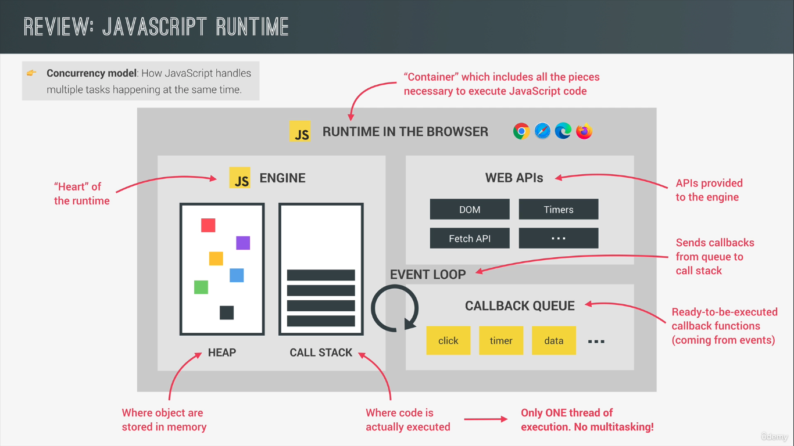
</p>
</div>
<ul class="org-ul">
<li>How can async code can be executed in a non blocking way if js have access to only one thread of execution in the engine.</li>
</ul>

<div id="org1ea11ec" class="figure">
<p>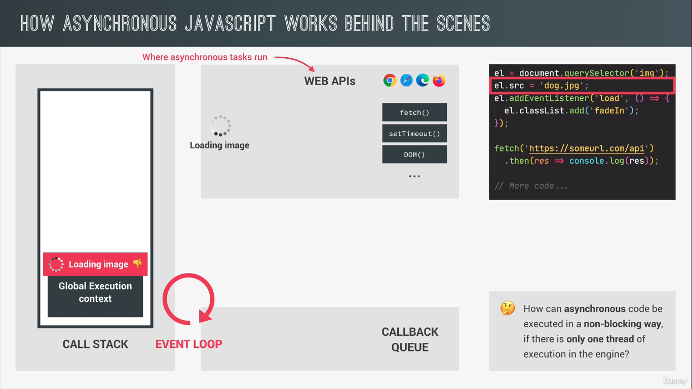
</p>
</div>
<ul class="org-ul">
<li>If the image is being loaded in sync it will block the code and hence they are being run in async.</li>
<li>If we would like to do something if the image has finished loading then we need to listen for the load event.</li>
</ul>
<p>
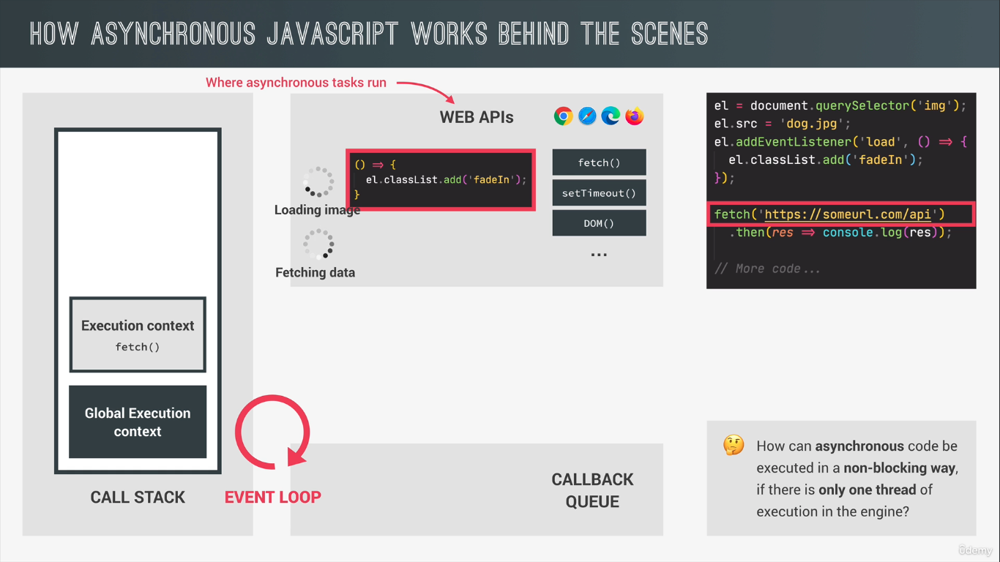
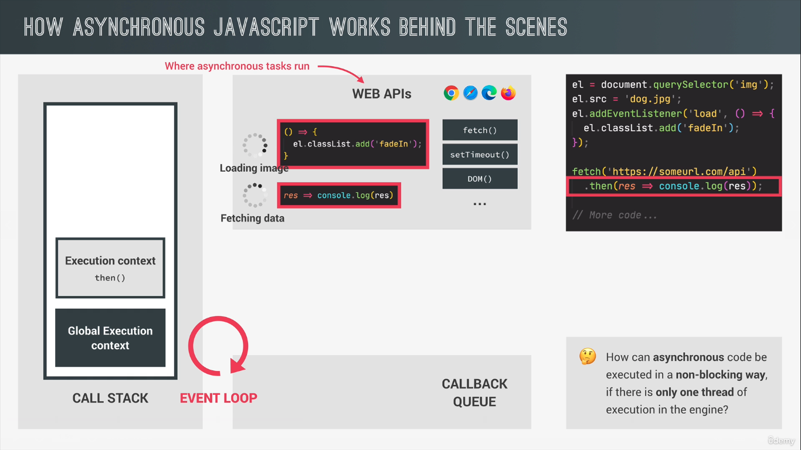
</p>
<ul class="org-ul">
<li>When the load event for the image is completed, it is then put in the callback queue.</li>
</ul>
<p>
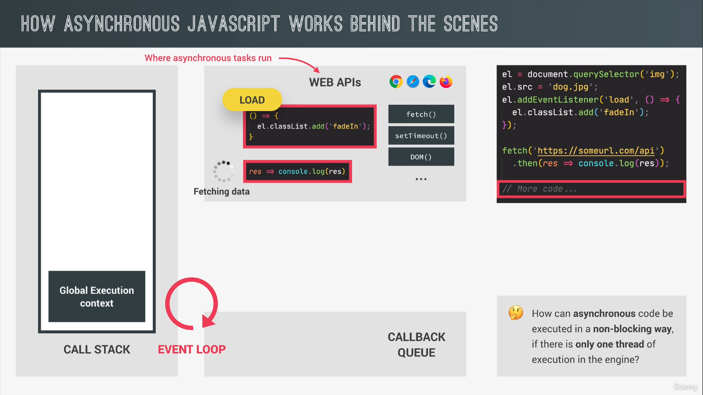
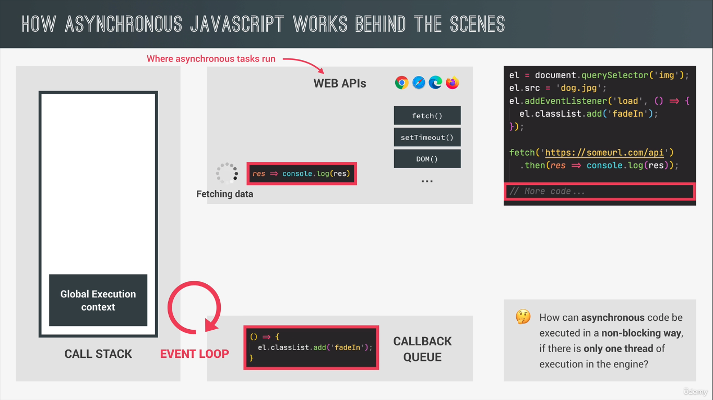
</p>
<ul class="org-ul">
<li>Callback queue is something like a todo list which the call stack need to complete.</li>
<li>The execution of the callback queue depends on the current state of it. If there are few functions present in the queue it need to be completed before the execution of our callback function.</li>
<li>The callback queue also contains callback coming from DOM elements like click. DOM events are not in async behaviour yet they still use the callback queue to run the attached callbacks.</li>
</ul>
</div>
<div id="outline-container-orga0010e3" class="outline-3">
<h3 id="orga0010e3"><span class="section-number-3">9.1.</span> Work of an Eventloop</h3>
<div class="outline-text-3" id="text-9-1">
<ul class="org-ul">
<li>It looks into the call stack and checks if its empty or not except of course the global context.</li>
<li>It it is empty then it takes the first call back from the callback queue and put in on the callback and executes it.</li>
</ul>

<div id="orgcff1e0d" class="figure">
<p>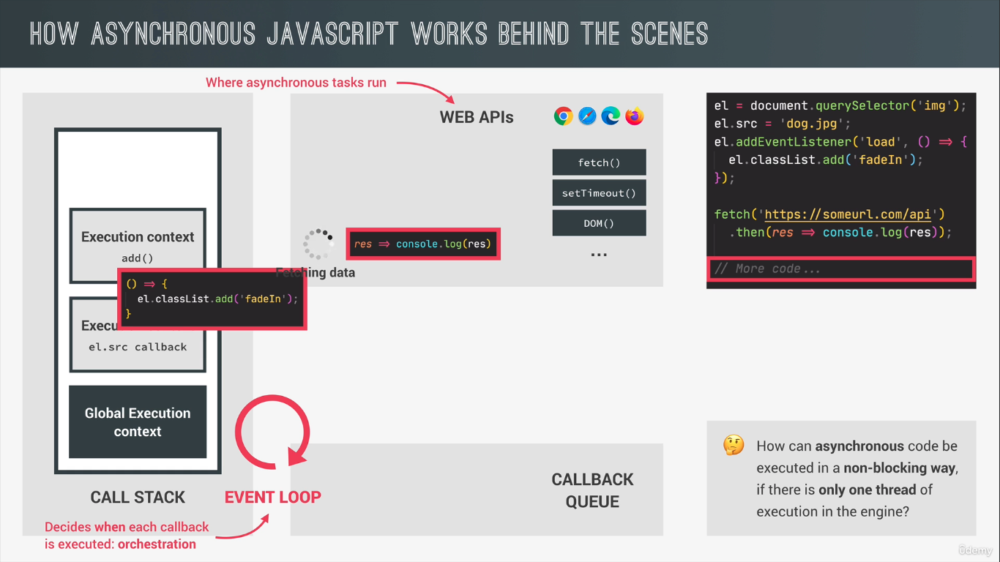
</p>
</div>

<ul class="org-ul">
<li>JS doesn't have no sense of time because everything that it does in async doesn't happen in the engine. Its the runtime which manages all the async behaviour and the eventloop which takes care of the call stack.</li>
</ul>

<div id="org4685898" class="figure">
<p>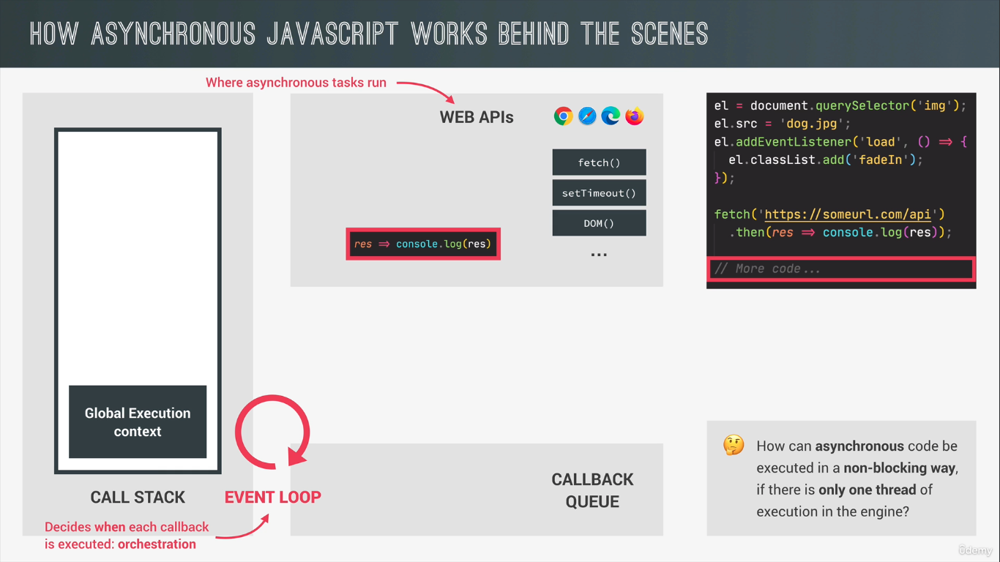
</p>
</div>
<ul class="org-ul">
<li>The fetch function is now returned. The callback from the promise which we got from the fetch doesn't enter the callback queue.</li>
<li>They have a special queue for themselves called microtasks queue.</li>
<li>The special feature of microtasks queue is that it has priority over the callback queue.</li>
</ul>
<p>
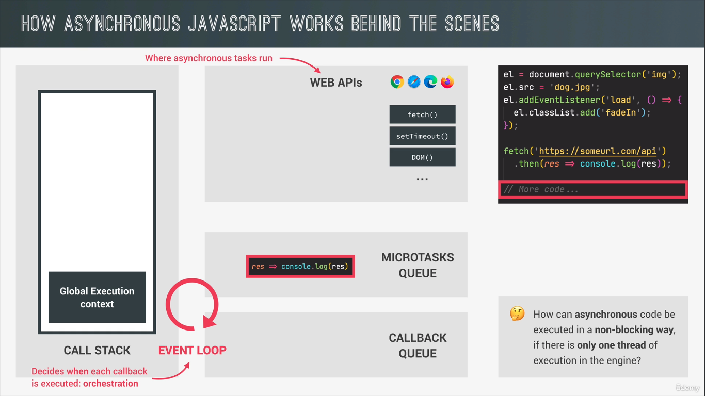
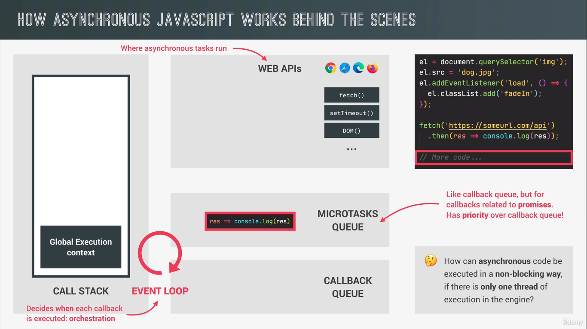
</p>
</div>
</div>
</div>
<div id="outline-container-org75835a0" class="outline-2">
<h2 id="org75835a0"><span class="section-number-2">10.</span> Event Loop in practise</h2>
<div class="outline-text-2" id="text-10">
<div class="org-src-container">
<pre class="src src-js">console.log(<span style="color: #4682b4;">'Test Start'</span>);
setTimeout(() =&gt; console.log(<span style="color: #4682b4;">'Timer Completed'</span>), 0);
Promise.resolve(<span style="color: #4682b4;">'Promise resolved'</span>).then(data =&gt; console.log(data));
console.log(<span style="color: #4682b4;">'Test End'</span>);

<span style="color: #616161;">// </span><span style="color: #616161;">Test Start - Present in Global Context</span>
<span style="color: #616161;">// </span><span style="color: #616161;">Test End - Present in Global Context</span>
<span style="color: #616161;">// </span><span style="color: #616161;">Promise resolved - Present in microtasks queue since its Promise which has priority over callback queue</span>
<span style="color: #616161;">// </span><span style="color: #616161;">Timer Completed - Present in callback queue</span>
</pre>
</div>
</div>
</div>
<div id="outline-container-org9923aff" class="outline-2">
<h2 id="org9923aff"><span class="section-number-2">11.</span> Building a Simple Promise</h2>
<div class="outline-text-2" id="text-11">
<div class="org-src-container">
<pre class="src src-js"><span style="color: #e5e5e5; font-weight: bold;">const</span> <span style="color: #e5e5e5;">lottery</span> = <span style="color: #e5e5e5; font-weight: bold;">new</span> <span style="color: #e5e5e5; font-style: italic;">Promise</span>(<span style="color: #e5e5e5; font-weight: bold;">function</span> (<span style="color: #e5e5e5;">resolve</span>, <span style="color: #e5e5e5;">reject</span>) { <span style="color: #616161;">// </span><span style="color: #616161;">the function passed as callback is called executor function</span>
  <span style="color: #e5e5e5; font-weight: bold;">if</span> (Math.random() &gt;= 0.5) {
    resolve(<span style="color: #4682b4;">'You win'</span>);
  } <span style="color: #e5e5e5; font-weight: bold;">else</span> {
    reject(<span style="color: #4682b4;">'You lost'</span>);
  }
});

lottery.then(data =&gt; console.log(data)).<span style="color: #e5e5e5; font-weight: bold;">catch</span>(err =&gt; console.log(err));
</pre>
</div>
<ul class="org-ul">
<li>In real world, most of the time we just consume promises.</li>
<li>We usally build promises to wrap old callback based functions into promises. This is called Promisifying.</li>
</ul>
<div class="org-src-container">
<pre class="src src-js"><span style="color: #e5e5e5; font-weight: bold;">const</span> <span style="color: #e5e5e5;">lottery</span> = <span style="color: #e5e5e5; font-weight: bold;">new</span> <span style="color: #e5e5e5; font-style: italic;">Promise</span>(<span style="color: #e5e5e5; font-weight: bold;">function</span> (<span style="color: #e5e5e5;">resolve</span>, <span style="color: #e5e5e5;">reject</span>) {
  console.log(<span style="color: #4682b4;">'Lottery draw is happening'</span>);
  setTimeout(<span style="color: #e5e5e5; font-weight: bold;">function</span> () {
    <span style="color: #e5e5e5; font-weight: bold;">if</span> (Math.random() &gt;= 0.5) {
      resolve(<span style="color: #4682b4;">'You win'</span>);
    } <span style="color: #e5e5e5; font-weight: bold;">else</span> {
      reject(<span style="color: #4682b4;">'You lost'</span>);
    }
  }, 5000);
});

lottery.then(data =&gt; console.log(data)).<span style="color: #e5e5e5; font-weight: bold;">catch</span>(err =&gt; console.log(err));
</pre>
</div>
<ul class="org-ul">
<li>Promisiying means to convert callback based async functions to promise based async functions.</li>
</ul>
<div class="org-src-container">
<pre class="src src-js"><span style="color: #e5e5e5; font-weight: bold;">const</span> <span style="color: #e5e5e5;">wait</span> = <span style="color: #e5e5e5; font-weight: bold;">function</span> (<span style="color: #e5e5e5;">seconds</span>) {
  <span style="color: #e5e5e5; font-weight: bold;">return</span> <span style="color: #e5e5e5; font-weight: bold;">new</span> <span style="color: #e5e5e5; font-style: italic;">Promise</span>(<span style="color: #e5e5e5; font-weight: bold;">function</span> (<span style="color: #e5e5e5;">resolve</span>) {
    setTimeout(resolve, seconds * 1000);
  });
};

wait(2).then(() =&gt; {
  console.log(<span style="color: #4682b4;">`I waited 2 seconds`</span>);
  <span style="color: #e5e5e5; font-weight: bold;">return</span> wait(1);
});
</pre>
</div>
<ul class="org-ul">
<li>Creating a fulfilled or rejected promise immediately. This will become the first mircrotask ever.</li>
</ul>
<div class="org-src-container">
<pre class="src src-js">Promise.resolve(<span style="color: #4682b4;">'ok'</span>).then(x =&gt; console.log(x));
Promise.reject(<span style="color: #e5e5e5; font-weight: bold;">new</span> <span style="color: #e5e5e5; font-style: italic;">Error</span>(<span style="color: #4682b4;">'problem'</span>)).then(err =&gt; console.log(err));
</pre>
</div>
</div>
</div>
<div id="outline-container-org5aa28ef" class="outline-2">
<h2 id="org5aa28ef"><span class="section-number-2">12.</span> Promisiying the Geolocation API</h2>
<div class="outline-text-2" id="text-12">
<div class="org-src-container">
<pre class="src src-js"><span style="color: #616161;">// </span><span style="color: #616161;">callback version</span>
navigator.geolocation.getCurrentPosition(
  position =&gt; console.log(position),
  err =&gt; console.log(err)
);
</pre>
</div>
<div class="org-src-container">
<pre class="src src-js"><span style="color: #616161;">// </span><span style="color: #616161;">promisified version</span>
<span style="color: #e5e5e5; font-weight: bold;">const</span> <span style="color: #e5e5e5;">getLocation</span> = <span style="color: #e5e5e5; font-weight: bold;">function</span> () {
  <span style="color: #e5e5e5; font-weight: bold;">return</span> <span style="color: #e5e5e5; font-weight: bold;">new</span> <span style="color: #e5e5e5; font-style: italic;">Promise</span>(<span style="color: #e5e5e5; font-weight: bold;">function</span> (<span style="color: #e5e5e5;">resolve</span>, <span style="color: #e5e5e5;">reject</span>) {
    <span style="color: #616161;">// </span><span style="color: #616161;">navigator.geolocation.getCurrentPosition(</span>
    <span style="color: #616161;">//   </span><span style="color: #616161;">position =&gt; resolve(position),</span>
    <span style="color: #616161;">//   </span><span style="color: #616161;">err =&gt; reject(err)</span>

    <span style="color: #616161;">// </span><span style="color: #616161;">instead of passsing the postion to the resolve function we can directly do this.</span>
    <span style="color: #616161;">// </span><span style="color: #616161;">since getCurrentPosition automatically calls the resolve function and automatically passes the position argumnet</span>
    <span style="color: #616161;">// </span><span style="color: #616161;">we can do this</span>
    navigator.geolocation.getCurrentPosition(resolve, reject);
  });
};

getLocation()
  .then(position =&gt; console.log(position))
  .<span style="color: #e5e5e5; font-weight: bold;">catch</span>(err =&gt; console.log(err));
</pre>
</div>
</div>
</div>
<div id="outline-container-org301c58a" class="outline-2">
<h2 id="org301c58a"><span class="section-number-2">13.</span> Writing a Promise for an image</h2>
<div class="outline-text-2" id="text-13">
<div class="org-src-container">
<pre class="src src-js"><span style="color: #e5e5e5; font-weight: bold;">const</span> <span style="color: #e5e5e5;">wait</span> = <span style="color: #e5e5e5; font-weight: bold;">function</span> (<span style="color: #e5e5e5;">seconds</span>) {
  <span style="color: #e5e5e5; font-weight: bold;">return</span> <span style="color: #e5e5e5; font-weight: bold;">new</span> <span style="color: #e5e5e5; font-style: italic;">Promise</span>(<span style="color: #e5e5e5; font-weight: bold;">function</span> (<span style="color: #e5e5e5;">resolve</span>) {
    setTimeout(resolve, seconds * 1000);
  });
};

<span style="color: #e5e5e5; font-weight: bold;">const</span> <span style="color: #e5e5e5;">createImage</span> = <span style="color: #e5e5e5; font-weight: bold;">function</span> (<span style="color: #e5e5e5;">imgPath</span>) {
  <span style="color: #e5e5e5; font-weight: bold;">return</span> <span style="color: #e5e5e5; font-weight: bold;">new</span> <span style="color: #e5e5e5; font-style: italic;">Promise</span>(<span style="color: #e5e5e5; font-weight: bold;">function</span> (<span style="color: #e5e5e5;">resolve</span>, <span style="color: #e5e5e5;">reject</span>) {
    <span style="color: #e5e5e5; font-weight: bold;">const</span> <span style="color: #e5e5e5;">image</span> = document.createElement(<span style="color: #4682b4;">'img'</span>);
    image.src = imgPath;
    image.addEventListener(<span style="color: #4682b4;">'load'</span>, <span style="color: #e5e5e5; font-weight: bold;">function</span> () {
      resolve(image), reject(err =&gt; console.log(err));
    });
  });
};

createImage(<span style="color: #4682b4;">'https://upload.wikimedia.org/wikipedia/commons/c/cc/Cat_Cute.JPG'</span>)
  .then(image =&gt; {
    document.querySelector(<span style="color: #4682b4;">'.images'</span>).appendChild(image);
    <span style="color: #e5e5e5; font-weight: bold;">return</span> wait(3).then(() =&gt; image);
  })
  .then(image =&gt; {
    image.style.display = <span style="color: #4682b4;">'none'</span>;
    <span style="color: #e5e5e5; font-weight: bold;">return</span> createImage(
      <span style="color: #4682b4;">'https://upload.wikimedia.org/wikipedia/commons/8/8a/Cat_eyes_2007-2.jpg'</span>
    );

  })
  .then(image =&gt; document.querySelector(<span style="color: #4682b4;">'.images'</span>).appendChild(image))
  .<span style="color: #e5e5e5; font-weight: bold;">catch</span>(err =&gt; console.log(err));
</pre>
</div>
</div>
</div>
<div id="outline-container-org2474350" class="outline-2">
<h2 id="org2474350"><span class="section-number-2">14.</span> Consuming Promises will Async/Await</h2>
<div class="outline-text-2" id="text-14">
<ul class="org-ul">
<li>The async keyword makes the function async.</li>
<li>The await keyword stops the async function until it returns a promise.</li>
</ul>
<div class="org-src-container">
<pre class="src src-js"><span style="color: #e5e5e5; font-weight: bold;">const</span> <span style="color: #e5e5e5;">whereAmI</span> = <span style="color: #e5e5e5; font-weight: bold;">async</span> <span style="color: #e5e5e5; font-weight: bold;">function</span> (<span style="color: #e5e5e5;">lat</span>, <span style="color: #e5e5e5;">lng</span>) {
  <span style="color: #e5e5e5; font-weight: bold;">const</span> <span style="color: #e5e5e5;">response</span> = <span style="color: #e5e5e5; font-weight: bold;">await</span> fetch(
    <span style="color: #4682b4;">`https://geocode.maps.co/reverse?lat=${lat}&amp;lon=${lng}&amp;api_key=66d2af4521443959752929lfbfd4255`</span>
  );
  console.log(response);
<span style="color: #616161;">// </span><span style="color: #616161;">async await is just similar to the below function</span>
<span style="color: #616161;">// </span><span style="color: #616161;">fetch(</span>
<span style="color: #616161;">//   </span><span style="color: #616161;">`https://geocode.maps.co/reverse?lat=${lat}&amp;lon=${lng}&amp;api_key=66d2af4521443959752929lfbfd4255`</span>
<span style="color: #616161;">// </span><span style="color: #616161;">).then(res =&gt; console.log(res));      </span>
};
whereAmI(72 ,-10);
</pre>
</div>
<ul class="org-ul">
<li>It's just a syntactic sugar over the <b>then</b> method.</li>
</ul>
<div class="org-src-container">
<pre class="src src-js"><span style="color: #e5e5e5; font-weight: bold;">const</span> <span style="color: #e5e5e5;">whereAmI</span> = <span style="color: #e5e5e5; font-weight: bold;">async</span> <span style="color: #e5e5e5; font-weight: bold;">function</span> (<span style="color: #e5e5e5;">lat</span>, <span style="color: #e5e5e5;">lng</span>) {
  <span style="color: #e5e5e5; font-weight: bold;">const</span> <span style="color: #e5e5e5;">response</span> = <span style="color: #e5e5e5; font-weight: bold;">await</span> fetch(
    <span style="color: #4682b4;">`https://geocode.maps.co/reverse?lat=${lat}&amp;lon=${lng}&amp;api_key=66d2af4521443959752929lfbfd4255`</span>
  );
  <span style="color: #e5e5e5; font-weight: bold;">const</span> <span style="color: #e5e5e5;">data</span> = <span style="color: #e5e5e5; font-weight: bold;">await</span> response.json();
  getCountry(data.address?.country);
};
whereAmI(28, 81);
</pre>
</div>
</div>
</div>
<div id="outline-container-org34c679d" class="outline-2">
<h2 id="org34c679d"><span class="section-number-2">15.</span> Error handling with try&#x2026;catch</h2>
<div class="outline-text-2" id="text-15">
<div class="org-src-container">
<pre class="src src-js"><span style="color: #616161;">// </span><span style="color: #616161;">idea about try catch</span>
<span style="color: #e5e5e5; font-weight: bold;">try</span> {
  <span style="color: #e5e5e5; font-weight: bold;">let</span> <span style="color: #e5e5e5;">x</span> = 10;
  <span style="color: #e5e5e5; font-weight: bold;">const</span> <span style="color: #e5e5e5;">y</span> = 3;
  y = 2;
} <span style="color: #e5e5e5; font-weight: bold;">catch</span> (err) {
  alert(err);
}
</pre>
</div>

<div class="org-src-container">
<pre class="src src-js"><span style="color: #e5e5e5; font-weight: bold;">const</span> <span style="color: #e5e5e5;">whereAmI</span> = <span style="color: #e5e5e5; font-weight: bold;">async</span> <span style="color: #e5e5e5; font-weight: bold;">function</span> (<span style="color: #e5e5e5;">lat</span>, <span style="color: #e5e5e5;">lng</span>) {
  <span style="color: #e5e5e5; font-weight: bold;">try</span> {
    <span style="color: #e5e5e5; font-weight: bold;">const</span> <span style="color: #e5e5e5;">response</span> = <span style="color: #e5e5e5; font-weight: bold;">await</span> fetch(
      <span style="color: #4682b4;">`https://geocode.maps.co/reverse?lat=${lat}&amp;lon=${lng}&amp;api_key=66d2af4521443959752929lfbfd4255`</span>
    );
    <span style="color: #e5e5e5; font-weight: bold;">try</span> {
      <span style="color: #e5e5e5; font-weight: bold;">const</span> <span style="color: #e5e5e5;">data</span> = <span style="color: #e5e5e5; font-weight: bold;">await</span> response.json();
      getCountry(data.address.country);
    } <span style="color: #e5e5e5; font-weight: bold;">catch</span> (err) {
      console.log(err);
      <span style="color: #e5e5e5; font-weight: bold;">throw</span> <span style="color: #e5e5e5; font-weight: bold;">new</span> <span style="color: #e5e5e5; font-style: italic;">Error</span>(<span style="color: #4682b4;">'Country not avilable'</span>);
    }
  } <span style="color: #e5e5e5; font-weight: bold;">catch</span> (err) {
    console.log(err);
  }
};

whereAmI(23, 3);
</pre>
</div>
</div>
</div>
<div id="outline-container-orgeeb8705" class="outline-2">
<h2 id="orgeeb8705"><span class="section-number-2">16.</span> Returning values from Async functions</h2>
<div class="outline-text-2" id="text-16">
<ul class="org-ul">
<li>Async functions always returns a promise.</li>
</ul>
<div class="org-src-container">
<pre class="src src-js"><span style="color: #e5e5e5; font-weight: bold;">const</span> <span style="color: #e5e5e5;">whereAmI</span> = <span style="color: #e5e5e5; font-weight: bold;">async</span> <span style="color: #e5e5e5; font-weight: bold;">function</span> (<span style="color: #e5e5e5;">lat</span>, <span style="color: #e5e5e5;">lng</span>) {
  <span style="color: #e5e5e5; font-weight: bold;">try</span> {
    <span style="color: #e5e5e5; font-weight: bold;">const</span> <span style="color: #e5e5e5;">response</span> = <span style="color: #e5e5e5; font-weight: bold;">await</span> fetch(
      <span style="color: #4682b4;">`https://geocode.maps.co/reverse?lat=${lat}&amp;lon=${lng}&amp;api_key=66d2af4521443959752929lfbfd4255`</span>
    );
    <span style="color: #e5e5e5; font-weight: bold;">try</span> {
      <span style="color: #e5e5e5; font-weight: bold;">const</span> <span style="color: #e5e5e5;">data</span> = <span style="color: #e5e5e5; font-weight: bold;">await</span> response.json();
      getCountry(data.address.country);
      <span style="color: #e5e5e5; font-weight: bold;">return</span> data.address.country; <span style="color: #616161;">// </span><span style="color: #616161;">returns a promise</span>
    } <span style="color: #e5e5e5; font-weight: bold;">catch</span> (err) {
      console.log(err);
      <span style="color: #e5e5e5; font-weight: bold;">throw</span> <span style="color: #e5e5e5; font-weight: bold;">new</span> <span style="color: #e5e5e5; font-style: italic;">Error</span>(<span style="color: #4682b4;">'Country not avilable'</span>);
    }
  } <span style="color: #e5e5e5; font-weight: bold;">catch</span> (err) {
    console.log(err);
  }
};

<span style="color: #e5e5e5; font-weight: bold;">const</span> <span style="color: #e5e5e5;">country</span> = whereAmI(23, 3); <span style="color: #616161;">// </span><span style="color: #616161;">promise being retuned</span>
country.then(data =&gt; console.log(data)); <span style="color: #616161;">// </span><span style="color: #616161;">promise being handled</span>
</pre>
</div>
<ul class="org-ul">
<li>The value being returned becomes the fulfilled value of the promise function.</li>
</ul>
</div>
</div>
</div>
<div id="postamble" class="status">
<p class="author">Author: mklno</p>
<p class="date">Created: 2024-09-03 Tue 15:43</p>
<p class="validation"><a href="https://validator.w3.org/check?uri=referer">Validate</a></p>
</div>
</body>
</html>
